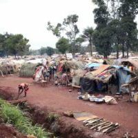
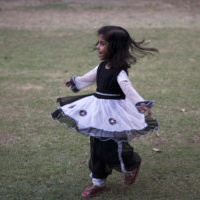

Global Stories
AFRICA

C.A.R. crisis stirred by diamonds, Russia
By Jason McLure
Eritrea's opportunity
By Jason McLure
Ethiopia’s new hope
By Jason McLure
-- MORE --
ASIA
The market in human organs
By Jason McLure
‘One-child’ policy leaves China graying
By Jason McLure

India’s girl shortage
By Jason McLure
-- MORE --